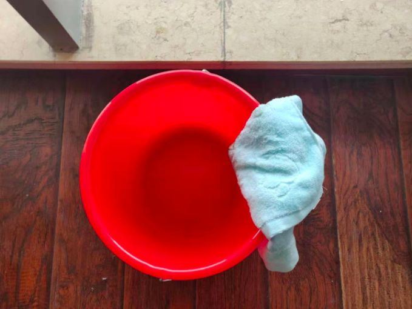
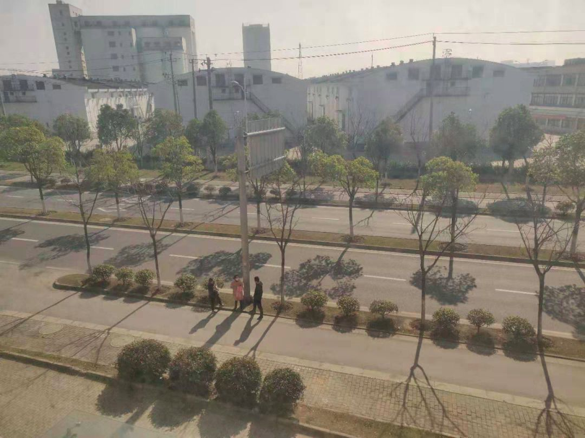
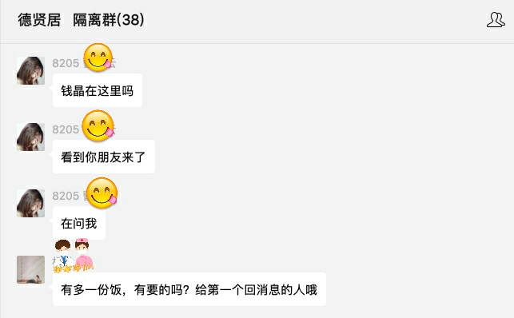

「 隔离日记 」 20200201
原文链接 备份链接 播放音乐 | 阅读效果更佳 感谢 | 您对霍超LEGAL的关注、阅读与分享 昨天，许多关心和关注我的人看到推送，给予我鼓励和安慰，收到祝福的消息太多，以至于一时让我有些手足无措，没能及时回复还望谅解，在此必须再说一句感 …
播放音乐 | 阅读效果更佳
感谢 | 您对霍超LEGAL的关注、阅读与分享
如今我每天蜗居在隔离房间里，都会定时看一些疫情相关的新闻，笑着看的时候看看看着就哭了；哭着看的时候，看着看着就笑了…… 所以会给自己一个时限，大概一天只花一个小时以内去浏览疫情的信息，我想所有现在无论是居家隔离还是在外隔离的人们，长期、大量浸润在疫情信息，尤其是负面导向的信息，都有可能濒向抑郁，所以大家一定要照顾好自己，不仅仅是防护病毒，还要关注心理。
今天呆着看疫情信息的时候，耳边常会响起以前语文课本里有鲁迅的《纪念刘和珍君》的那句话：“苟活者在淡红的血色中，会依稀看见微茫的希望；真的猛士，将更奋然而前行。”

每天陪伴我做多的电脑，2020年2月2日
麻麻自我进来以后….就一直嘱托我在房间里要多运动锻炼，也有关心我的小伙伴，推荐我可以在逼仄的空间里看着视频尝试打打太极，也能提高免疫力….还记得在武大桂园操场的“每天锻炼一小时，健康工作五十年，幸福生活一辈子”的标语，其实自己过去一年由于各种主客观的原因，运动的频次也都不如往年，切身可感自己身体的机能确有下降，既然有了大把空闲的时间，空间其实从不是问题，还记得之前还曾火过一段时间的“囚徒健身”，短时间在注意安全的情况下在家里练练应该也是极好的。
每天锻炼后，就是用医护人员提供给我们的消毒泡腾片，放到水桶里做成消毒水，自行给房间里、尤其是门窗上擦拭消毒，这个我觉得在家里有84消毒液或者其他消毒资料的也最好能保证每日的消杀，在特殊时期多一点的谨慎肯定也是更好的。

_消毒泡腾片，_2020年2月1日__

_消毒桶里的水，用于擦拭房间，_2020年2月1日__
昨天开始，我在隔离区里也收到了一个好消息，可以有家人来送一些生活资料到这里，也可以自己在附近的超市、便利店外卖购买，经过检查，放到隔离区的门口，然后再由医护人员给我们送到房间门口。如此一来，我也时隔许久再次感受了祖国外卖事业的便利，不过根据我所购买的那家便利店来看，水果蔬菜、低温牛奶酸奶已接近售罄，具有较长时间保质期的食品也都供应充足，据我和店家电话沟通，除了低温冷链相关的产品，每天也还有比较充足的配货。

_窗外可能是给隔离区人送生活所需的家人，_2020年2月1日__

_便利店外卖买到的一些物资，_2020年2月1日__
而隔离群里，除了又新增了几个人以外，整体活泼的氛围依旧没有改变，吃也依旧是大家最关心的话题，自己也仔细回想了一下，这么多天里，也只听到一次急救车的声音，目前看来，我所在的隔离区，大抵也都比较健康，无论是身体还是心理。有这样的网友，隔离的日子里，还是多了很多温馨。
 “ 德贤居 隔离群 ”，为保护个人隐私，聊天截图有做部分处理
“ 德贤居 隔离群 ”，为保护个人隐私，聊天截图有做部分处理
“ 德贤居 隔离群 ”，为保护个人隐私，聊天截图有做部分处理

“ 德贤居 隔离群 ”，为保护个人隐私，聊天截图有做部分处理
虽然在我看来，几乎所有写在网络自媒体上的文字，尤其是我这种絮絮叨叨的文字，其实不论是有多少阅读量、碰巧遇到个“10万+”，也都是写在水上的字，转瞬就流逝了。尤其是前几天看到了吴哥窟，这个以前只在电脑游戏《文明》里十几个回合建起的奇观，在现实中无论是建筑本身还是所承载的佛教、印度教思辨都给我极深的震撼，文明的繁盛在自然和时间的面前显得那么渺小，但又那么弥足珍贵。
泰戈尔在《吉檀迦利》里有一段送给因为爱而没有在苦难之中舍弃生命的人们： “我生命中的生命，我要不断努力保持身体洁净，因为我知道你生之爱抚正触及我的四肢。我要不断努力使思想远离虚伪，因为我知道你是那点燃我心中理性之火的真理。我要不断努力驱除心中一切邪恶，让我的爱之花常开，因为我知道，你已在我内心圣殿深处安放了座位。我要竭力在我的行为中展现你，因为我知道，是你的神力给了我行动的力量。”
_吴哥考古公园内的小摊，_2020年1月25日__
所以如今我写的这些，困局在一室之内，当然可以看看剧、听听相声渡过，但是既然有了这个难得的慎独的机缘，不如就趁着多一点写作、多一点思考、多一点为了忘却的纪念。
在今天边写边想的最后，我想感谢能够一直坚持看到现在的您，再认真地说一遍，最初您关注这个公众号时，说的那一段文字：
“我们所生活的时代是一个最值得纪录的时代，不仅仅是因为我们正经历着剧烈的变革；也不仅仅是因为这个时代还有那么多贫困、愚昧、不公、新奇和伤痛；更是因为现实比理想来的更灿烂、更伟大。在视窗前，有着太多转瞬即逝的时刻、大大小小的等待以及那些可爱可敬的人们；而在视窗后，有着我们的判断、我们的审美和我们努力书写的片面。惟愿在这个纷繁变幻的时代里，我们能相随常伴。”
查看 往日
—End—
文 | 霍超
插曲 | 《那些花儿》- 朴树
封面插图 | 霍超
正文摄影 | 霍超
封底视频 | Every Leica has a Soul
长按二维码
关注 | 公众号
点 在看 留下你的印记
谢谢一路有你＼( ^▽^ )／
Huochao
谢谢支持！
长按二维码向我转账
谢谢支持！
受苹果公司新规定影响，微信 iOS 版的赞赏功能被关闭，可通过二维码转账支持公众号。
原文链接 备份链接 播放音乐 | 阅读效果更佳 感谢 | 您对霍超LEGAL的关注、阅读与分享 昨天，许多关心和关注我的人看到推送，给予我鼓励和安慰，收到祝福的消息太多，以至于一时让我有些手足无措，没能及时回复还望谅解，在此必须再说一句感 …
原文链接 备份链接 播放音乐 | 阅读效果更佳 感谢 | 您对霍超LEGAL的关注、阅读与分享 昨天飞机刚刚落地，手机开机给爸妈报了平安，人们开始涌动，起来从行李架上收拾东西，飞机上的广播突然响起，”乘坐本次航班的旅客 霍超先生，因为您先 …
原文链接 备份链接 先点击上方蓝字关注我喔~ 从我1月22号第一次出现症状开始，到今天是第12天，在2天前，我开始自行退烧了，咳嗽频率也大幅下降，算上今天，我已经退烧3天了，体温一直都在36.5左右，没有反复，至此，我想我已经战胜病毒了。 …
原文链接 备份链接 “我倒是不很担心自己，就有点担心做得不够好、或者给团队拖后腿，毕竟经验有限。” 全文2216字，阅读约需4分钟 1月30日凌晨3点，护士王皓脱下最后一层脚套，兜着已经发肿的手，离开武汉协和医院西院的隔离区。 1月27 …
原文链接 备份链接 编者按 这篇约稿来自一名化名为“平安”的武汉大学生，记述了她从返乡、封城，再到过年所经历的种种。这个特殊的春节，绝望与希望同在，寂静与喧嚣并存。身处「风暴中心」，她的心理有什么样的变化？让我们一起来看看她的五日。 “ …